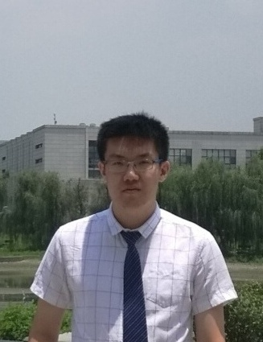

News
25 Jan 2022
One paper is accepted by WWW on graph anomaly detection.
18 Oct 2022
One paper is accepted by WSDM on graph anomaly detection.
30 Jun 2022
One paper is accepted by FCS on self-supervised rumor detection.
|  |
YUAN GAO
PhD student
School of Cyber Science and Techonology
Email: yuanga@mail.ustc.edu.cn
|
I am a 3rd year PhD student at the USTC Lab for Data Science, supervised by Prof. Xiangnan He and Prof. Xiang Wang. My research interest lies in graph anomaly detection and GNN generalization. I have 2 publications that appear in top-tier conferences including WSDM (Oral), WWW. Moreover, I have served as the (external) reviewer for ECML-PKDD.

Publication
In the Year of 2023: |
Addressing Heterophily in Graph Anomaly Detection: A Perspective of Graph Spectrum
Yuan Gao, Xiang Wang*, Xiangnan He*, Zhenguang Liu, Huamin Feng & Yongdong Zhang WWW 2023 (Full, Accept Rate: 19.2%) Codes |
|
Alleviating Structural Distribution Shift in Graph Anomaly Detection
Yuan Gao, Xiang Wang*, Xiangnan He*, Zhenguang Liu, Huamin Feng & Yongdong Zhang WSDM 2023 (Full Oral, Accept Rate: 7.54%) Codes |
|
Rumor Detection with Self-supervised Learning on Texts and Social Graph
Yuan Gao, Xiang Wang*, Xiangnan He*, Huamin Feng & Yongdong Zhang Frontiers of Computer Science (FCS) |
Services
| Program committee member of ECML-PKDD 2022 |
Experiences
| Software Engineer - Machine Learning, Shopee (Singapore), Aug 2019 - Aug 2020 |
Education
| University of Science and Techonology of China (USTC) PhD student in Computer Science Sep 2020 - Now, Hefei Advisor: Prof. Xiangnan He and Prof. Xiang Wang Mentor: Prof. Huamin Feng and Prof. Yongdong Zhang |
| University of Michigan (Umich) Master in Electrical and Computer Engineering Sep 2017 - June 2019, Ann Arbor |
| University of Electronic Science and Technology of China (UESTC) Bachelor in Electrical Engineering Sep 2013 - June 2017, Chengdu Advisor: Prof. Yang Han |

Last update: 3 Jan, 2023. Webpage template borrows from Prof. Xiangnan He.